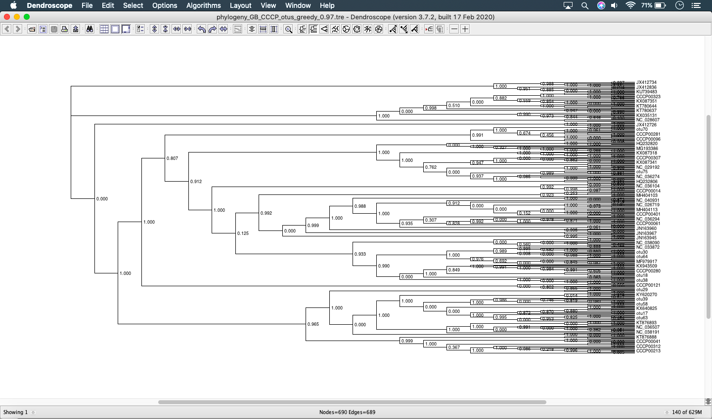
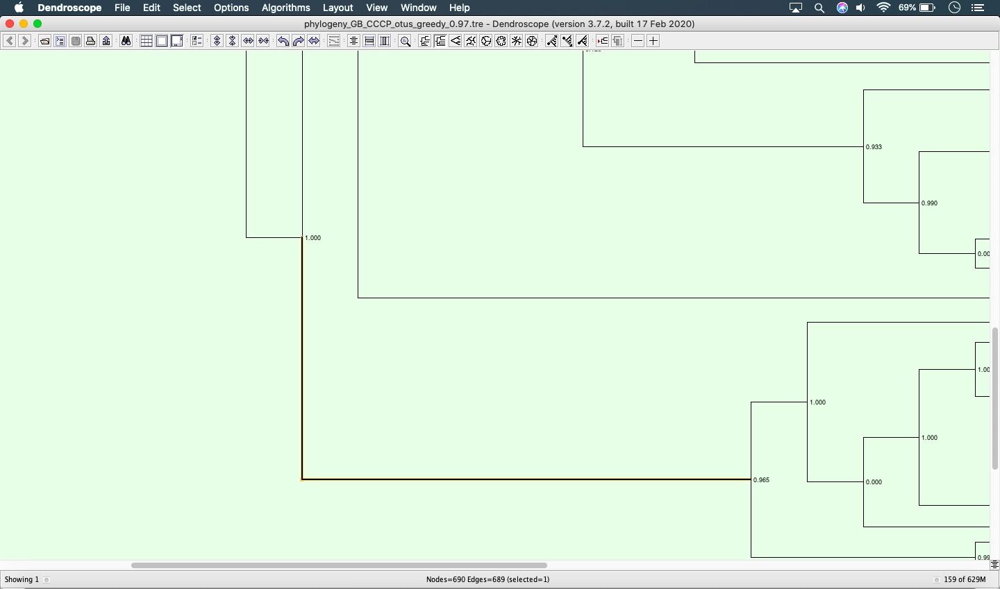
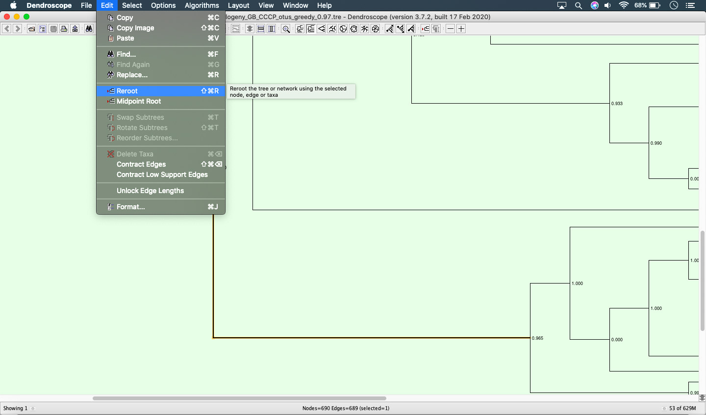

Fundamentals: Viewing trees¶
Introduction¶
In this tutorial we will look at how you can view phylogentic trees using the free software Dendroscope. If you are familiar with Dendroscope or a similar software feel free to skip this.
Software and data
This section uses the software Dendroscope, which you can download from here
Viewing tree in Dendroscope¶
To open your tree in Dendroscope you can click on the open file icon in the top menu or navigate to and then browse and select your file. Your tree will then load and you should see it on your screen (see below example).
Once your tree has loaded you can click and drag the tree to move it around the screen. Scrolling will stretch or narrow the tree. Pressing control and + or - will zoom the node labels in or out.
You can select different layouts for your tree using the buttons on the top bar. You can also use the various arrow buttons to help zoom the tree in or out. To the right, there are also buttons that you can use to ladderise your tree - these are particularly helpful after rerooting.
Rerooting a tree in Dendroscope¶
To reroot a tree you in Dendroscope you must first select the branch that you want to set as root. If you already have something selected, clear it by going to . Then select the branch you want to set as root with your cursor. The below screenshot shows an example of a selected branch.
Then to reroot your tree navigate to as shown in the below screenshot and your tree will be rerooted.
Next steps¶
If you haven’t already you can check out the tutorial on viewing alignments. You can also check out the Barcode tree with references extension or the OTU comparison tree extension.
Alternatively, you can proceed to the next tutorial, Phylogenetic placement.